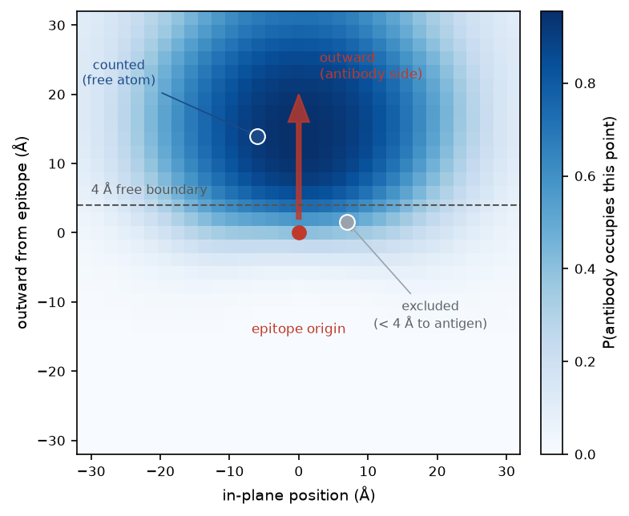

Docs › AOMclash
A designed scaffold can hold the epitope in the right shape and still place its own bulk where an antibody needs to be. AOMclash estimates how much a scaffold would obstruct antibody binding, by reading a map of where antibodies sit across many known antibody–antigen complexes.
Scaffolding fixes the geometry of the epitope, but the rest of the scaffold is free to be any fold. If that scaffold mass sits in the space an antibody approaches through, the epitope is presented correctly and still unreachable. This is a different question from whether the fold is right: epitope RMSD and AlphaFold3 confidence can both look good while the surrounding scaffold blocks the approach. AOMclash is the term that scores this obstruction.
AOMclash does not dock a specific antibody. It reads an antibody-occupancy map: about 1,029 antibody–antigen complexes from SAbDab, each placed in a common epitope frame — the origin at the epitope, with one axis pointing outward, away from the antigen body, into the space an antibody approaches through. In each complex the antibody’s volume is marked on a 33×33×33 grid; averaging over all complexes gives, at every grid point, the probability that an antibody sits there.

scripts/render_aom_slice.py. The 4 Å free boundary and the two atom markers
are illustrative overlays.The score sums those probabilities over the scaffold atoms that stick out beyond the native antigen — the parts that are not just mimicking the real antigen’s shape:
p1(atom) is the occupancy probability read at the atom; the bracket is 1 for atoms
farther than 4 Å from any native-antigen atom (free) and 0 otherwise.
s_p1_free.p1). When a design’s
own antigen is one of those complexes, that complex is left out of the average (leave-one-antigen-out).
Artifact: episcaf_analysis/aomclash/aom_map.pkl, built by aom_map.py.s_p1_free = more scaffold bulk in high-occupancy space = more
predicted obstruction. Lower is better.Three related quantities are kept distinct in episcaf: a geometric count (the legacy cylinder,
atoms inside a cone), this occupancy-weighted sum (s_p1_free), and a learned
multi-feature prediction (a 39-feature model, tested and not adopted — see F).
The same score is read at two stages, on different inputs:
s_p1_free are kept and
the rest are dropped before ProteinMPNN and AlphaFold3. This is the pipeline’s main compute
saving. See the protocol control ›twelvemer preset). When a reference
antibody is present (the known-antibody arm), the measured AF3 clash count against that antibody is
used instead of the estimate.The inputs differ (a bare backbone vs. a predicted design), so the two uses are related but not identical; the interpretation above is per stage.
What has been checked, and what it does and does not establish:
These are implementation and port checks: they establish that the score is computed as intended, not
that it predicts experimental antibody binding. Treat s_p1_free as a ranking signal for
accessibility, to be confirmed downstream.
In the code. episcaf_analysis/aomclash/ —
aom_map.py (builds the occupancy map), features.py (reads it at each atom),
score.py (the deployable scorer), model.py (the calibration).
Map artifact: aom_map.pkl. Feature reference:
episcaf_analysis/aomclash/FEATURES.md. Decision record:
results/aomclash/feature_set_decision.md.
← Back to the design protocol · the full methods · the pipeline